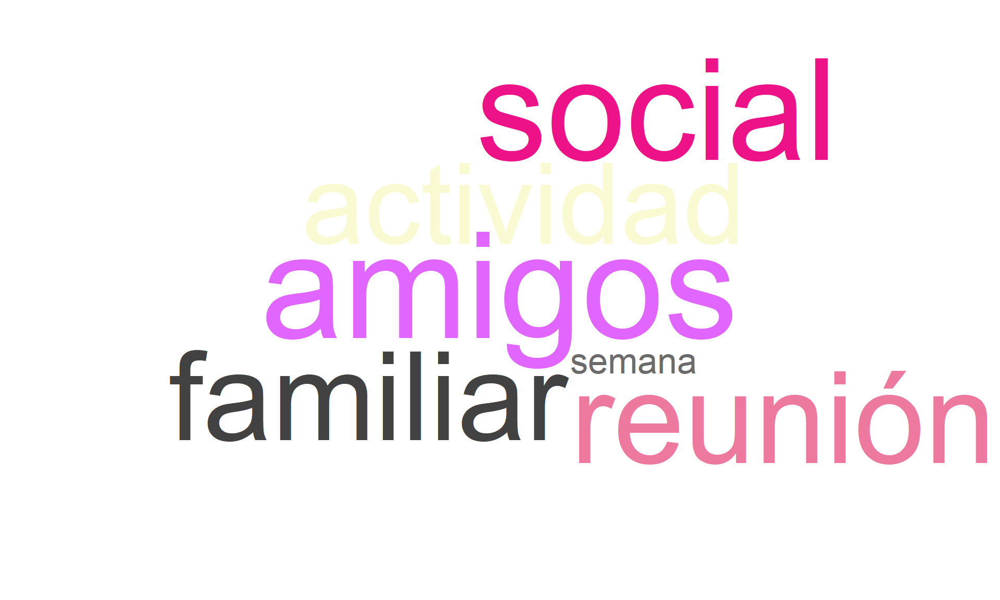

5 Sesión 3. Salud integral
Aclaración importante
En los gráficos y filtros, el nombre Cúcuta aparecerá como Cucuta.
5.1 Sesión 3. Salud integral
5.2 Alimentación
5.2.1 ¿Cuántas veces come al día?
Descripción para todos los campus
La mayoría de los estudiantes (78.5%) reportan consumir alimentos entre 3 y 5 veces al día. Un 18.8% lo hace solo entre 1 y 2 veces al día, y un porcentaje reducido (2.7%) lo hace más de 5 veces al día. Esto indica una frecuencia alimentaria adecuada en la mayoría, aunque hay un grupo que podría estar en riesgo nutricional por baja frecuencia.
5.2.2 ¿Cuántas veces por semana consumen los siguientes alimentos en su hogar? (carne, pollo, pavo, res, cordero, cerdo, conejo, pescado o huevos, etc)
Descripción para todos los campus
Casi el 30% de los estudiantes consume proteína animal casi todos los días, seguido de un 27.3% que lo hace todos los días. El 24% lo hace entre 3 y 5 veces por semana. Un grupo menor presenta un consumo reducido: 17.7% lo hace solo 1 a 2 veces por semana y 1.5% nunca o rara vez. Esto refleja una tendencia general a consumir proteína animal regularmente, aunque hay un grupo con baja frecuencia.
5.2.3 ¿Cuántas veces por semana consumen los siguientes alimentos en su hogar? Cereales (avena, granola), frutos secos (almendras, maní) o legumbres (fríjoles, garbanzos, lentejas)
Descripción para todos los campus
El 36.9% de los estudiantes consume proteína vegetal entre 1 a 2 veces por semana. Un 26.2% lo hace entre 3 y 5 veces por semana, mientras que el 17.5% casi todos los días y el 9.75% todos los días. Un 9.6% reporta no consumirla o hacerlo rara vez. Aunque hay consumo frecuente en una parte del grupo, destaca la necesidad de promover una mayor ingesta regular de proteína vegetal.
5.3 Actividad laboral de los padres y trabajo del estudiante
5.3.1 Señale aquella labor que sea más similar al trabajo que realizó su padre durante la mayor parte del último año.
Descripción para todos los campus
Las ocupaciones paternas más comunes incluyen el trabajo como profesional (por ejemplo, médico o ingeniero), seguido por la propiedad de negocios medianos o pequeños y oficios técnicos como operarios o conductores. También hay una proporción considerable de estudiantes que no saben o no aplican la pregunta. La diversidad en la ocupación paterna muestra un perfil socioeconómico variado.
5.3.2 Señale aquella labor que sea más similar al trabajo que realizó su madre durante la mayor parte del último año.
Descripción para todos los campus
Predomina el trabajo en el hogar o que no trabaja, seguido por ocupaciones profesionales y trabajos en negocios propios. Esto sugiere una participación laboral femenina menor que la paterna y refuerza patrones tradicionales de distribución del trabajo por género.
5.3.3 ¿Cuáles de los siguientes bienes hay en su hogar?
Descripción para todos los campus
En esta nube de palabras destacan términos como “horno”, “lavadora”, “máquina”, “ropa”, y “gas”, lo cual indica que estos elementos son comunes en los hogares de los encuestados. También se identifican bienes de valor como “automóvil”, “moto”, y artículos de entretenimiento como “consola”, “xbox”, “nintendo” y “playstation”, aunque con menor frecuencia. Esto sugiere una diversidad en la disponibilidad de bienes, desde necesidades básicas hasta elementos de ocio.
5.3.4 ¿Cuántas horas remuneradas trabajó usted la semana pasada?
Descripción para todos los campus
El 42.9% de los estudiantes no realiza trabajo remunerado, mientras que el 32% respondió “no aplica”. Un porcentaje menor (10.) trabaja menos de 10 horas o más de 30 horas semanales. Esto indica que la mayoría no realiza actividades laborales, lo cual puede estar relacionado con dedicación exclusiva a estudios o falta de oportunidades laborales.
5.3.5 ¿Usted recibe algún tipo de remuneración por trabajar?
Descripción para todos los campus
El 73.6% no recibe remuneración laboral. El 24.2% recibe pago en efectivo y menos del 2.5% recibe algún tipo de remuneración en especie o mixta. Esto refuerza el hallazgo previo sobre baja proporción de estudiantes que trabajan y reciben ingresos.
5.3.6 Con respecto al año pasado, la situación económica de su hogar es:
Descripción para todos los campus
El 61.2% de los estudiantes considera que su situación económica no ha cambiado respecto al año anterior. Un 33.1% percibe una mejoría, y solo el 5.7% considera que ha empeorado. Esto indica estabilidad económica en la mayoría de los hogares y un panorama positivo general.
5.4 Sustanacias psicoactivas
5.4.1 ¿Consume algún tipo de sustancia psicoactiva?
Descripción para todos los campus
El 99.5% de los estudiantes reporta no haber consumido sustancias psicoactivas, lo cual es un hallazgo positivo en términos de salud pública. Solo un 0.5% reconoce consumo, lo cual representa una proporción marginal dentro de la muestra.
5.4.2 ¿Cuál fue la edad de inicio de consumo de sustancias psicoactivas?
Descripción para todos los campus
La mayoría de los estudiantes que reportan consumo de sustancias psicoactivas iniciaron entre los 14 y 16 años (50%). Un 33.3% comenzó entre los 17 y 19 años, mientras que un 16.7% empezó antes de los 13 años. Estos datos indican que el inicio del consumo suele darse en la adolescencia media, lo cual es un periodo de mayor vulnerabilidad y riesgo conductual.
5.4.3 ¿Qué tipo de sustancia psicoactiva consume?
Descripción para todos los campus
Entre los estudiantes que consumen sustancias psicoactivas, el 50% reporta el uso de cannabis (marihuana), y el otro 50% menciona otras sustancias sin especificar.
5.4.4 ¿Ha recibido orientación o ayuda profesional o especializada para superar la situación del consumo de sustancias psicoactivas y mitigar los riesgos y daños asociados al mismo?
Descripción para todos los campus
Dos de cada tres estudiantes (66.7%) que consumen sustancias psicoactivas no han recibido orientación o ayuda profesional, mientras que un tercio (33.3%) sí lo ha hecho. Esta baja proporción de acompañamiento profesional evidencia una posible barrera en el acceso o solicitud de servicios de salud mental y apoyo psicosocial.
5.4.5 Tipo de ayuda recibido para superar el consumo de sustancias psicoactivas
Descripción para todos los campus
La palabra “ninguna” aparece como la más frecuente, lo que indica que muchas personas no han tenido una experiencia institucional previa. También se observan menciones a entornos “familiares” y “centro de binestar”, lo cual sugiere que, en los casos donde sí hubo experiencia, esta estuvo relacionada con instituciones de atención familiar o de paso temporal.
5.5 Consumo de Cigarrillo: Hábitos y Motivaciones
5.5.1 ¿Usted fuma cigarrillo?
Descripción para todos los campus
El 99.3% de los estudiantes indica que no fuma cigarrillo, y solo el 0.7% afirma que sí lo hace. Esto sugiere que el hábito de fumar cigarrillo es poco frecuente en la población estudiada.
5.5.2 Edad en la que empezó a fumar
Descripción para todos los campus
Entre quienes fuman, las edades más comunes de inicio son los 14, 15 y 17 años, con un 22.2% cada una. En menor proporción, algunos iniciaron a los 16, 18 o 19 años (11.1% cada uno). Esta información señala que el inicio del consumo de tabaco también ocurre típicamente en la adolescencia temprana o media.
5.5.3 ¿Cuál fue el motivo por el cual probó por primera vez el cigarrillo?
Descripción para todos los campus
El motivo más frecuente por el que los estudiantes probaron cigarrillos fue la curiosidad o iniciativa propia (55.6%). El 22.2% lo hizo por sentimientos de tristeza o aburrimiento, y el resto por imitación de conductas familiares u otras razones (11.1% cada una). Esto sugiere que el entorno emocional y la búsqueda de nuevas experiencias juegan un papel importante en el inicio del consumo.
5.5.4 ¿Cuántos cigarrillos fuma diariamente?
Descripción para todos los campus
Todos los estudiantes que indicaron fumar consumen entre 1 y 2 cigarrillos al día. Este patrón sugiere un consumo de baja intensidad entre quienes fuman actualmente.
5.6 Hábitos con el alcohol
5.6.1 ¿Usted consume alcohol normalmente?
Descripción para todos los campus
La mayoría de los estudiantes encuestados manifestó no consumir alcohol, representando el 94.8% del total. Solo el 5.2% reportó que sí lo hace. Esto indica que el consumo de alcohol es poco frecuente dentro de la muestra evaluada.
5.6.2 Edad de inicio del consumo de alcohol por primera vez
Descripción para todos los campus
Las edades más comunes de inicio del consumo de alcohol se concentran entre los 16, 17 y 18 años. Hay casos aislados de inicio desde los 11 años y hasta los 20. La tendencia muestra que el primer contacto con el alcohol se da principalmente en la adolescencia media.
5.6.3 ¿Cuál fue el motivo por el cual probó por primera vez el alcohol?
Descripción para todos los campus
El 71.2% de los estudiantes que han probado alcohol indicaron que lo hicieron por curiosidad o iniciativa propia. Un 27.3% mencionó otras razones y solo un 1.5% lo hizo por imitación de conductas familiares. Esto sugiere que la decisión fue principalmente individual, más que influenciada por el entorno familiar.
###¿Cuántas veces a la semana ingiere alcohol?
Descripción para todos los campus
Entre quienes consumen alcohol, el 95.5% lo hace solo los fines de semana, mientras que el 4.5% lo hace entre dos y tres veces al día. El patrón de consumo es ocasional y concentrado en los fines de semana.
5.6.4 Ocasiones en las cuales consume alcohol
Descripción para todos los campus
Esta nube de palabras refleja un patrón de consumo principalmente social, familiar y orientado a eventos grupales. Es útil para entender que, dentro de la comunidad estudiantil encuestada, el alcohol se vincula más con la vida social que con el consumo individual o por hábito.

5.7 Vida sexual
5.7.1 A qué edad inició su vida sexual
Descripción para todos los campus
El 43.5% de los estudiantes señaló no haber iniciado su vida sexual. Un porcentaje similar (42.4%) lo hizo entre los 14 y 17 años, mientras que el 11.7% lo hizo entre los 18 y 21 años. Los casos de inicio antes de los 13 años o después de los 22 son muy pocos. La mayoría de quienes han iniciado su vida sexual lo hizo en la adolescencia.
5.7.2 ¿Ha utilizado alguna vez métodos anticonceptivos?
Descripción para todos los campus
El 84.2% de los estudiantes encuestados indicó utilizar métodos anticonceptivos, frente al 15.8% que no los usa. Esto sugiere un nivel alto de conciencia sobre la protección en las relaciones sexuales entre la población estudiantil.
5.7.3 Metódos anticonpcetivos usados
Descripción para todos los campus
La mayoría de los estudiantes (36.3%) navega entre 1 y 3 horas diarias, seguido por un 28.1% que lo hace por más de 3 horas. Solo un 1.9% dice no usar Internet, lo que confirma su alto grado de penetración como herramienta cotidiana.

5.7.4 ¿De acuerdo con la definición de identidad de género, usted como se identifica?
Descripción para todos los campus
La mayoría de los estudiantes se identifican como mujeres cisgénero (47.2%) y hombres cisgénero (41.2%). El 10,8% prefirió no responder. Las identidades de género diversas como no-binario (0.5%) y hombre transgénero (0.33%) están presentes, aunque en una proporción mucho menor. Esto indica una mayoría de identidad cisgénero con visibilidad de diversidades de género.
5.7.5 ¿Cuál es su orientación sexual?
Descripción para todos los campus
La mayoría de los encuestados se identifican como heterosexuales (90.5%). Las orientaciones no heterosexuales están representadas en menor proporción, destacando la orientación bisexual (5.63%) y la homosexual (1.98%). Las categorías pansexual, asexual y otras tienen frecuencias inferiores al 1.5%. Esto indica una baja diversidad de orientación sexual en la muestra o una posible subdeclaración por parte de los participantes.
5.8 Estado de salud
5.8.1 ¿Padece de alguna enfermedad diagnosticada que requiere tratamiento actualmente?
Descripción para todos los campus
El 7.37% de los estudiantes reportó tener alguna enfermedad diagnosticada, mientras que el 92.6% indicó no tener enfermedades.
5.8.2 Indique si toma medicamentos como tratamiento de la enfermedad diagnosticada
Descripción para todos los campus
Tres de cada cuatro estudiantes (75.3%) indicaron estar tomando medicamentos. Esto contrasta con el porcentaje que reportó tener una enfermedad (7.37%), lo cual sugiere que el uso de medicamentos podría estar relacionado con condiciones no crónicas o tratamientos temporales (por ejemplo, anticonceptivos, analgésicos, suplementos, entre otros).
5.9 Discapacidad
5.9.1 Tiene alguna discapacidad
Descripción para todos los campus
El 12.5% de los encuestados reportó tener algún tipo de discapacidad, mientras que el 87.5% indicó no tener ninguna. Este valor refleja la presencia de personas con discapacidad en el entorno universitario y puede orientar estrategias de inclusión y accesibilidad.
5.9.2 ¿Qué tipo de discapacidad posee?
Descripción para todos los campus
Del total de encuestados, el tipo de discapacidad más reportado fue la visual (9.03%), seguida por la física (1.66%) y la psicosocial (1.11%). Las discapacidades intelectual (0.396%) y auditiva (0.317%) fueron menos frecuentes.